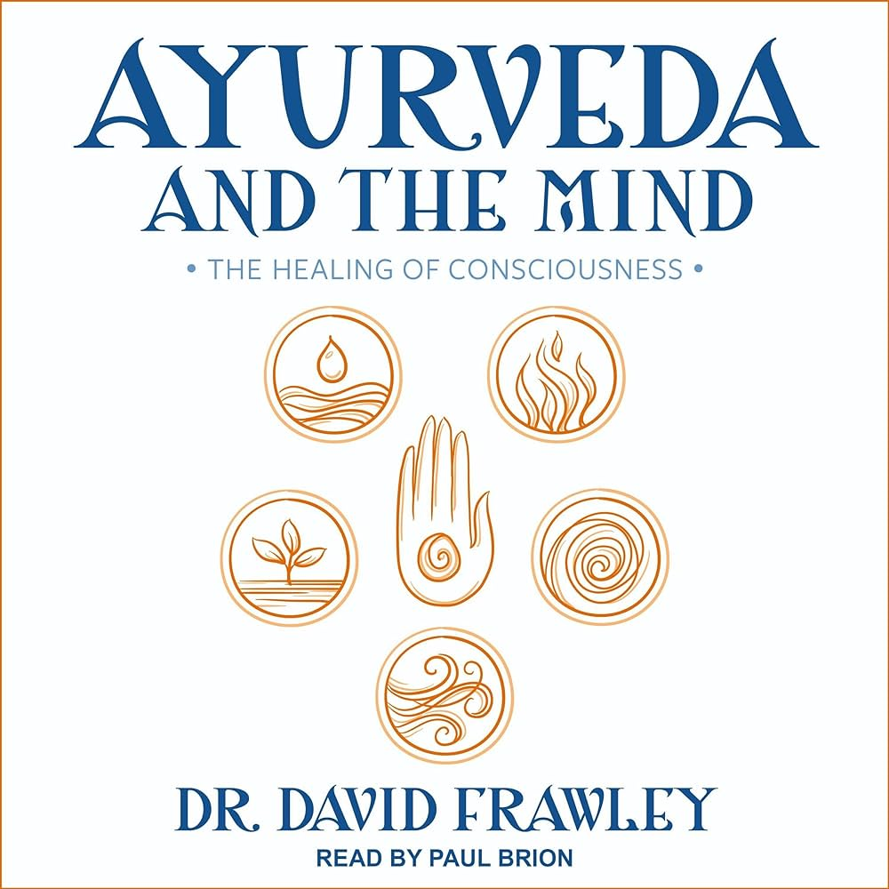
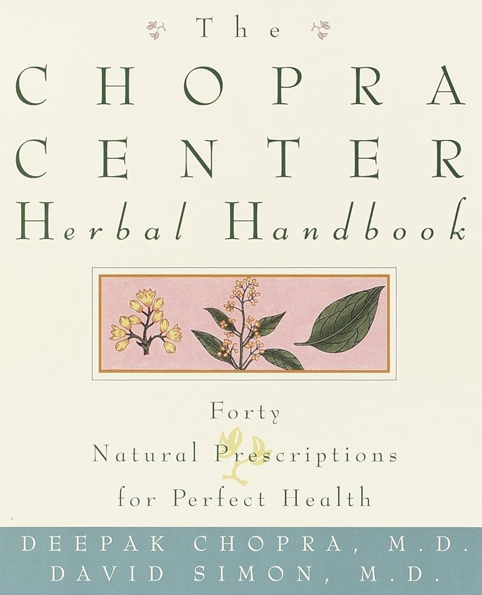
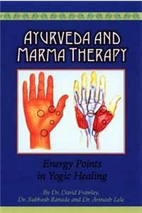
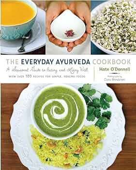
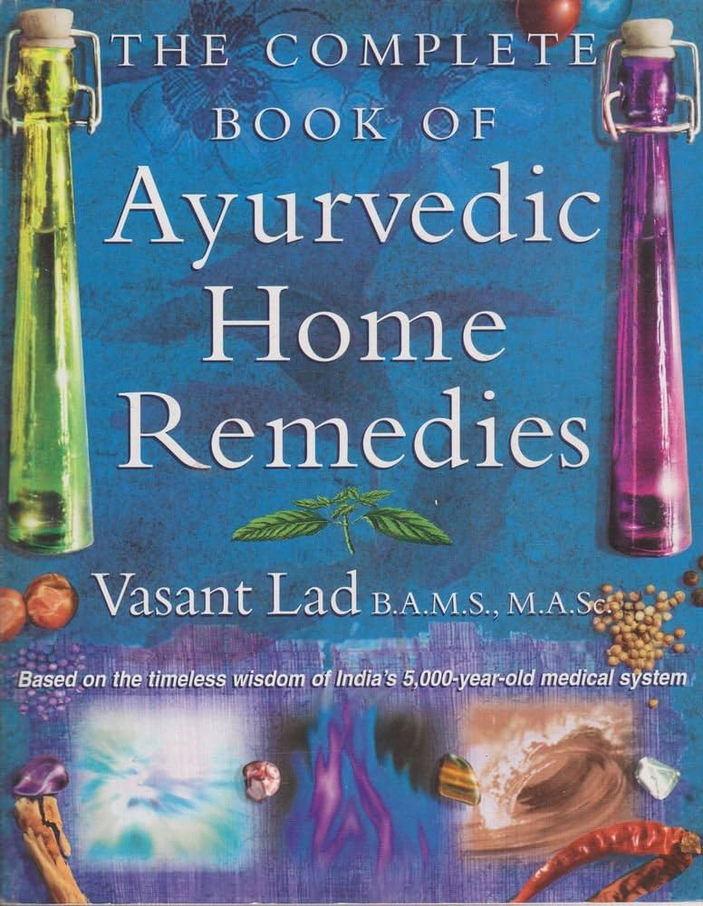
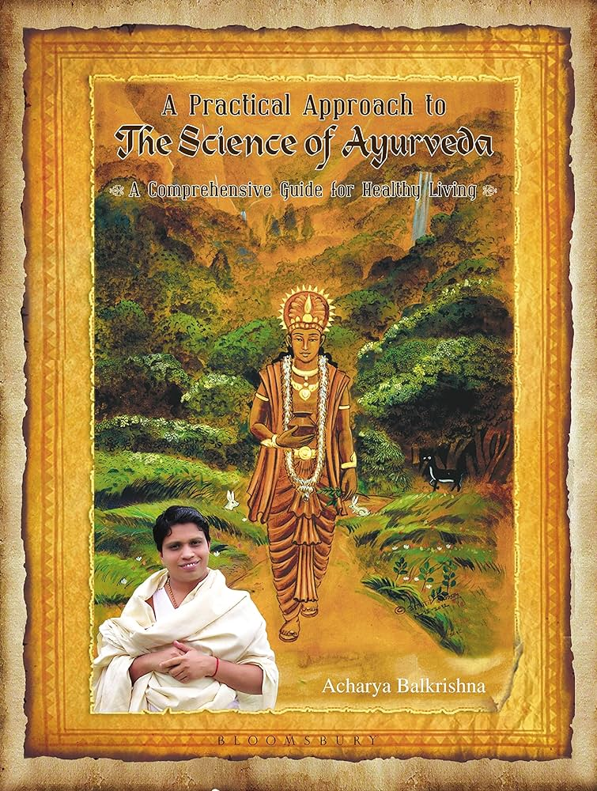
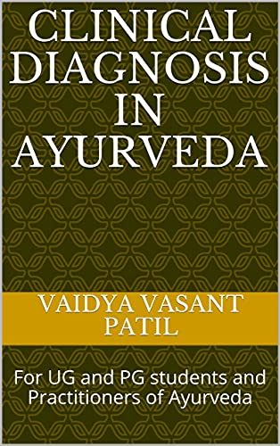

The ideas are explained clearly, and there are several instances of how to recognize balance and imbalance in the body. There are a lot of practical suggestions for getting back into balance.

This book delves further into Ayurveda, focusing on its physical, mental, and emotional aspects. There are also numerous tests for assessing physical and mental constitutions, which add a deeper layer of insight into the workings of the mind from an Ayurvedic perspective.

This book is for individuals who want to learn about the usage and effects of various plants. It combines Eastern wisdom and Ayurvedic knowledge with Western science.

This is an excellent book to use for self-care as well as when helping others if one have a background in massage or acupuncture or a strong interest in how the body responds to physical contact.
Focusing on the many stages of a woman's life, there is also much of beneficial and practical advice. This is an accessible and interesting book for people with a little or a lot of Ayurvedic expertise.

There are an increasing number of Ayurvedic recipe books available these days, and this one is especially simple to follow and comprehend due to its Western influence.

A comprehensive book that includes nutrition and lifestyle instructions, as well as seasonal guidance. Tips are offered to fit each person's dosha (mind and body type), and the Illnesses and Remedies A-Z section takes up a substantial chunk of the book.

This book refers to the fundamental concepts that underpin the Ayurvedic perspective on life. It goes through the fundamentals in greater depth and with additional vocabulary.

The book goes into further detail on Ayurveda's understanding of the illness process. It is intended for advanced students and focuses on the diagnostic aspect of the disease as well as the disease process.